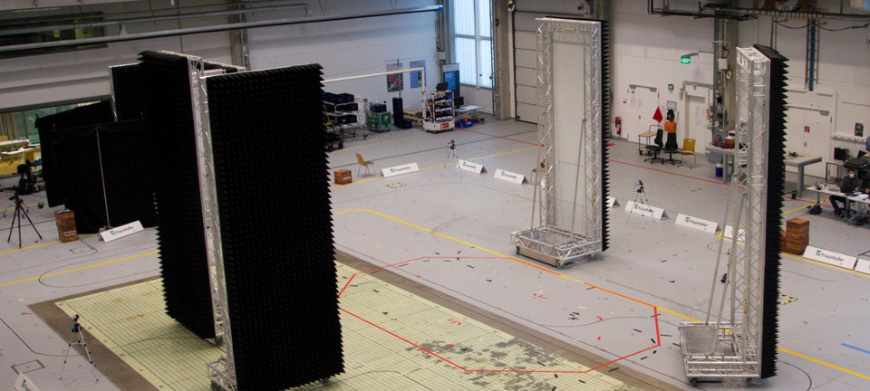
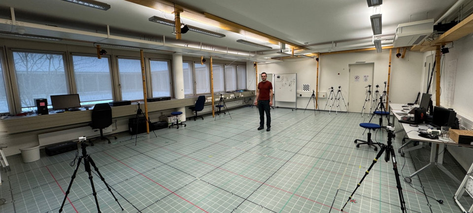
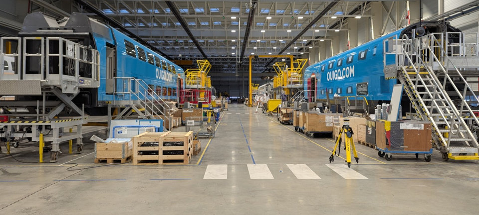
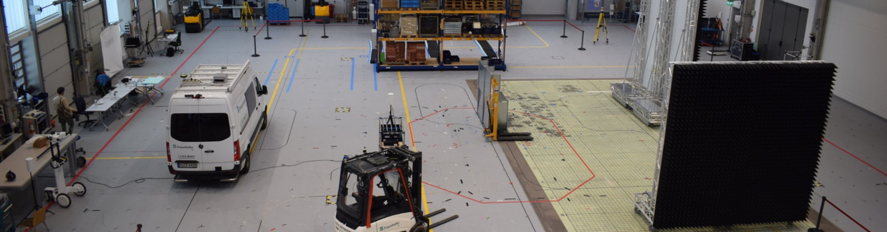

Datasets
We provide public datasets for machine learning, positioning and sensing — from radio-based localization to industrial applications and event-stream analytics.
Datasets for Wireless Positioning

Fingerprinting Dataset for Positioning
UWB and 5G CIR measurements, ToF/TDoA and reference positions for indoor radio fingerprinting.

Passive UWB
Multistatic UWB CIR and IMU recordings with optical ground truth for passive target localization.


IPIN Competition Datasets
For the Indoor Positioning and Indoor Navigation (IPIN) competitions, we provide benchmark datasets in cooperation with Fraunhofer IIS. They cover UWB and 5G channel impulse responses (CIR) and increasingly challenging indoor localization scenarios, including dynamic environments, different carrying agents, additional smartphone sensor data, and limited reference positions.
Miscellaneous Datasets
DEBS 2013 Soccer Monitoring
High-frequency positional tracking from an instrumented soccer match for event-stream research and sports analytics.
Warehouse Dataset
Large-scale visual indoor positioning with nearly half a million RGB images and 3D pose labels.
Tool Tracking Dataset
Inertial, magnetic-field and audio recordings of hand-tool operations and anomalous actions.
Online Handwriting Recognition from Sensor-Enhanced Pens
Sensor-enhanced pen recordings for research on online handwriting recognition.